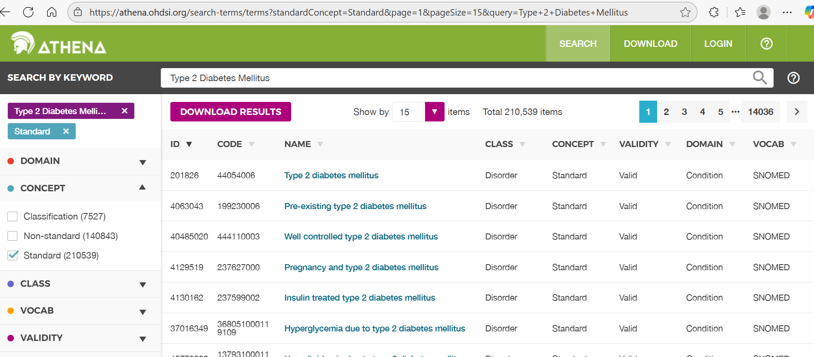
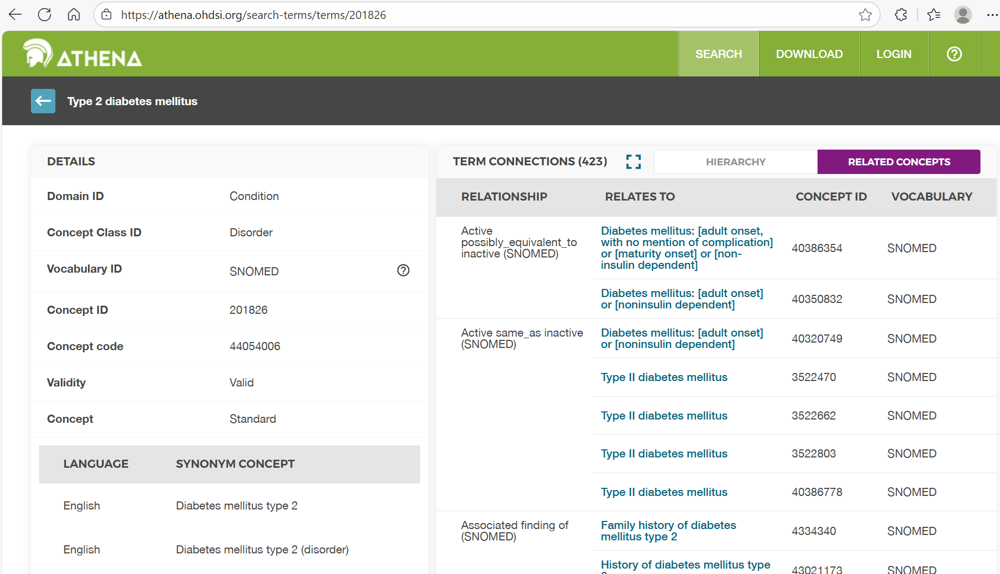
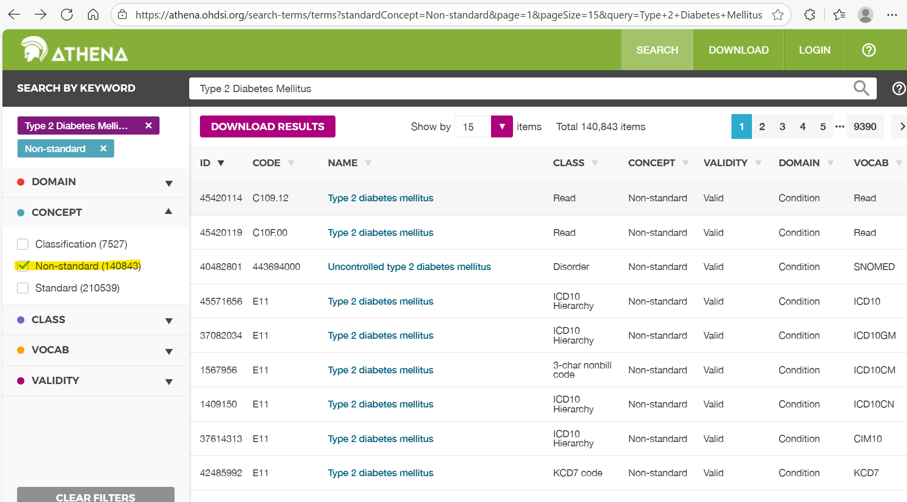

🧭 Day 1 · Athena Vocabulary Exploration & Quiz
Primary tool: Athena (no account needed)
This exercise runs entirely in Athena — no CDM credentials required. For SQL practice, use your site's CDM connection and the Day 1 Code Snippets.
No CDM access? Colab fallback
If you don't yet have a CDM connection, a synthetic-data companion notebook is available:
 or download it.
or download it.
Purpose: Learn to explore OMOP standardized vocabularies in Athena
and test your understanding of OMOP CDM concepts, vocabularies, and relationships.
🧩 Athena Vocabulary Exploration Exercise
This exercise focuses exclusively on exploring the OMOP Standardized Vocabularies using Athena.
You’ll investigate how OMOP organizes concepts, relationships, and hierarchies — using Type 2 Diabetes Mellitus as an example condition.
💡 Learning Goals
By the end of this exercise, participants will be able to:
- Navigate Athena and locate clinical concepts across vocabularies.
- Distinguish between standard and non-standard concepts.
- Interpret concept relationships (“Maps to,” “Is a,” “Has ancestor,” etc.).
- Recognize the structure and purpose of OMOP vocabularies and domains.
- Understand how vocabulary choice impacts analytic consistency and data quality.
🔍 Section 1 – Getting Started with Athena
Step 1.1 — Search for a Clinical Condition
- Open Athena.
- Search for “Type 2 Diabetes Mellitus.”
- Identify:
- The standard concept (
Standard Concept = S) - A related non-standard concept (
Standard Concept = NULL) - The domain, vocabulary, and concept class

Trainer Prompts
- What distinguishes “standard” vs “non-standard” in OMOP?
- Which vocabularies are most common for Condition domains?
- Why are “mapping” relationships essential for standardization?
Step 1.2 — Review Concept Details and Hierarchies
- Open the Concept Details page for your chosen concept.
- Explore relationships, ancestors / descendants, and concept class.

Trainer Prompts
- How do “Is a” and “Has ancestor” define hierarchy?
- Why might “Maps to” differ from “Is a”?
- When reviewing descendants, how do you decide what’s “too specific”?
🧭 Section 2 – Vocabulary Interpretation and Mapping Logic
Step 2.1 — Explore Relationships
Choose a non-standard ICD10CM code for Type 2 Diabetes and inspect its mappings.

Discussion Questions
1. What happens if two ICD codes map to the same SNOMED concept?
2. How does that improve cross-institution consistency?
3. What does “Maps to value” mean?
Step 2.2 — Vocabulary Hierarchy Practice
Pick another condition (e.g., Hypertension, Asthma, Heart Failure).
- Count how many descendants the top-level concept has.
- Identify one or two that might be too specific.
- Review the vocabulary version and note updates.
Trainer Prompts
- How frequently are vocabularies updated in Athena?
- What are the risks of using outdated vocabularies?
- How can version metadata be stored for reproducibility?
🧪 Section 3 – Reflection and Data Quality Awareness
Reflection Questions
- How does using standardized vocabularies improve analytic reproducibility?
- What mapping errors could affect cohort counts?
- Why can’t non-standard codes be used directly?
- How does vocabulary hierarchy influence inclusion/exclusion?
Trainer Extension
- Explore a multi-domain concept like “HbA1c.”
- Compare Measurement vs Observation domains.
- Why does domain assignment matter for analytics?
📋 Deliverables
- Completed answers to vocabulary questions.
- 2–3 screenshots from Athena (search, details, relationships).
- Reflection notes summarizing insights.
🧾 Trainer Overview (Sample Discussion Notes)
Example Discussion
- Standard concept:
Type 2 diabetes mellitus(SNOMED 201826) - Non-standard concept:
E11.9 – Type 2 diabetes mellitus without complications(ICD10CM) → maps to 201826 - OMOP standardizes to SNOMED so EHR diagnoses share a common meaning.
- ICD codes map to SNOMED via “Maps to” relationships in Athena.

🧮 Day 1 · OMOP Vocabulary & CDM Quiz
Goal: Test your understanding of the OMOP Common Data Model and standardized vocabularies.
Click “Show answer” under each question to reveal the explanation.
1️⃣ Concepts & Standardization
Q1. What does it mean for a concept to be standard in OMOP?
Answer:
A standard concept can be used consistently across all OMOP databases for analysis.
These concepts serve as universal references that link different vocabularies (e.g., ICD → SNOMED).
Non-standard concepts exist only for source-specific coding.
Q2. Which table contains information about how one concept maps to another?
Answer:
concept_relationship — this table defines links such as “Maps to,” “Is a,” “Subsumes,” etc.
It connects source (non-standard) concepts to standard ones used for analytics.
Q3. What is the main purpose of vocabulary standardization in OMOP?
Answer:
To allow consistent analysis across institutions and datasets.
Standardization ensures that all equivalent source codes map to the same standardized meaning.
2️⃣ Core CDM Structure
Q4. Which of the following tables contains patient-level clinical events?
Answer:
condition_occurrence — this table stores diagnosis and problem list entries at the person level.
Q5. How are OMOP vocabularies linked to the CDM?
Answer:
By using concept_id foreign keys in domain tables (e.g., condition_concept_id).
This ties every record to a standardized concept, enabling consistent analytics.
3️⃣ Vocabulary Navigation in Athena
Q6. What does “Maps to” indicate in Athena?
Answer:
“Maps to” connects a non-standard source code (e.g., ICD-10-CM) to its standard concept (e.g., SNOMED).
It defines the translation needed for standardized analytics.
Q7. If you search for Type 2 Diabetes Mellitus in Athena, which vocabulary is typically standard for the Condition domain?
Answer:
SNOMED CT — SNOMED serves as the standard vocabulary for clinical conditions in OMOP.
4️⃣ Relationships & Hierarchies
Q8. Which pair of relationship IDs defines the hierarchy between general and specific concepts?
Answer:
“Is a” and “Has ancestor.”
These describe parent–child relationships, defining how concepts nest under broader categories.
Q9. You find two ICD codes that both map to the same SNOMED concept. What does this tell you about the OMOP model?
Answer:
OMOP standardizes multiple source codes to a single concept definition.
This ensures that analyses aggregate results correctly, even if hospitals use different coding systems.
5️⃣ Applied Reasoning
Q10. A data engineer loads a new EHR table but forgets to translate ICD-9 codes to SNOMED concepts. What is the most likely downstream issue?
Answer:
The analysis tools (ATLAS/HADES) won’t recognize the conditions correctly because they depend on standard concepts.
Non-standard codes will break standardization and analytic consistency.
🧩 Use the Cheat Sheet and
Day 1 Slides to review these concepts.
For deeper exploration, repeat the Athena Vocabulary Exercise with a different condition.
💡 Instructor Note
You can turn this into an in-class poll (Kahoot, PollEv) or reuse it for post-training self-checks.
Answers are embedded but collapsed by default to encourage active recall.
💬 Trainer Reference – Suggested Answers
🔍 Section 1 – Getting Started with Athena
Step 1.1 — Search for a Clinical Condition
Discussion Prompts & Suggested Answers
| Prompt | Answer / Talking Points |
|---|---|
| What distinguishes “standard” vs “non-standard” in OMOP? | Standard concepts (standard_concept = 'S') are unified reference terms used for analysis; non-standard (NULL) are source codes that require mapping. |
| Which vocabularies are most common for Condition domains? | SNOMED CT is the primary standard vocabulary for conditions. Source vocabularies include ICD-9-CM and ICD-10-CM. |
| Why are “mapping” relationships essential for standardization? | “Maps to” relationships connect local or source-specific codes to a shared standard concept, ensuring consistent meaning and comparable analytics across sites. |
Step 1.2 — Review Concept Details and Hierarchies
| Prompt | Answer / Talking Points |
|---|---|
| How do “Is a” and “Has ancestor” define hierarchy? | “Is a” indicates a direct parent–child relationship (e.g., Type 2 Diabetes is a Diabetes). “Has ancestor” generalizes for all higher-level links. |
| Why might “Maps to” differ from “Is a”? | “Maps to” connects different vocabularies (crosswalk), while “Is a” expresses hierarchy within a single vocabulary. |
| When reviewing descendants, how do you decide what’s “too specific”? | Concepts that narrow the condition beyond your study purpose (e.g., “Hypertension complicating pregnancy” for a general hypertension study). Exclude when clinically irrelevant. |
🧭 Section 2 – Vocabulary Interpretation and Mapping Logic
Step 2.1 — Explore Relationships
| Question | Suggested Answer / Talking Points |
|---|---|
| What happens if two ICD codes map to the same SNOMED concept? | They represent clinically equivalent conditions. Mapping merges them into one concept, preventing double-counting. |
| How does that improve cross-institution consistency? | Different coding systems converge on one shared concept ID, ensuring identical interpretation and patient counts. |
| What does “Maps to value” mean? | Used for Measurement/Observation domains — connects a source value concept (e.g., “positive,” “abnormal”) to its standardized result meaning. |
Step 2.2 — Vocabulary Hierarchy Practice
| Prompt | Answer / Talking Points |
|---|---|
| How frequently are vocabularies updated in Athena? | Monthly or bi-monthly; SNOMED and RxNorm update frequently. Always note the vocabulary_version when downloading. |
| What are the risks of using outdated vocabularies? | Mappings may be deprecated or missing; new terms could be excluded, leading to data quality issues or incorrect cohorts. |
| How can version metadata be stored for reproducibility? | Document versions in ETL logs, study protocol, or CDM metadata (vocabulary table fields). |
🧪 Section 3 – Reflection and Data Quality Awareness
| Question | Suggested Answer / Talking Points |
|---|---|
| How does using standardized vocabularies improve analytic reproducibility? | Ensures all sites interpret and aggregate data identically, supporting consistent multi-site results. |
| What mapping errors could affect cohort counts? | Missing or incorrect “Maps to” links can misclassify or exclude patients. |
| Why can’t non-standard codes be used directly? | They don’t have consistent meaning across vocabularies; analytic tools require standard concepts. |
| How does vocabulary hierarchy influence inclusion/exclusion? | The ancestor/descendant range affects cohort breadth — too high = over-inclusive, too low = overly narrow. |
| Multi-domain example (HbA1c) — Why does domain assignment matter? | “HbA1c as Measurement” indicates a lab test; as Observation, it might represent a note. Correct domain ensures proper table joins and analysis. |
💡 Key Takeaways
- SNOMED CT is the standard for clinical conditions in OMOP.
- Mapping relationships (“Maps to,” “Maps to value”) form the backbone of standardization.
- Hierarchy (“Is a,” “Has ancestor”) controls the precision of concept sets.
- Version tracking is essential for reproducibility across time and data partners.
🧩 Instructor Tip: Review these answers after learners share findings to reinforce reasoning.
Keep this section collapsed in MkDocs — it’s hidden by default and easy to expand during class.